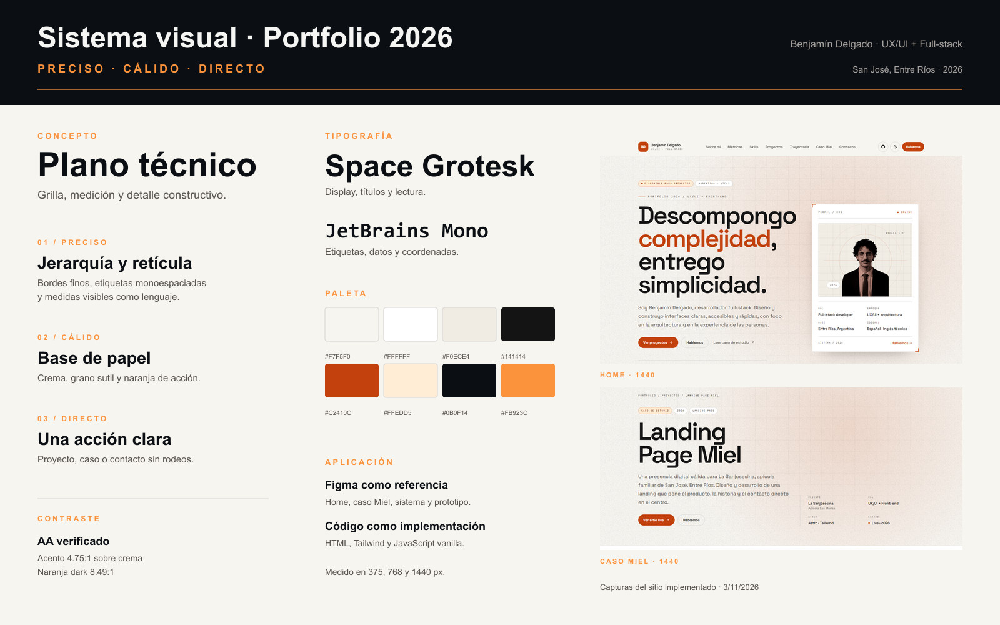
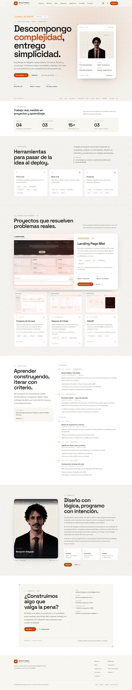
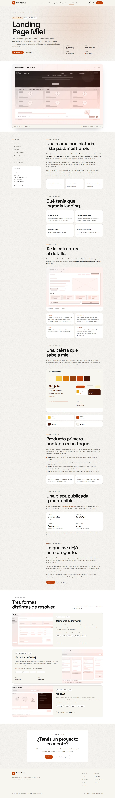
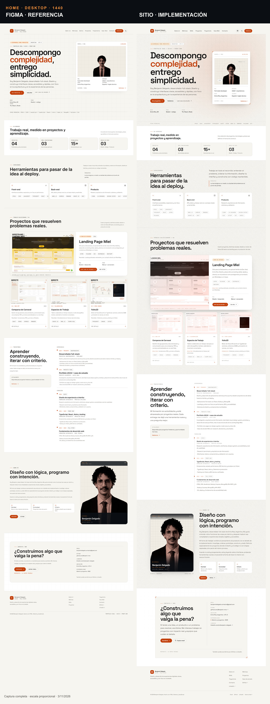

Proceso de diseño y desarrollo
De la consigna al sitio publicado: research, identidad, sistema, implementación y evidencia.
01 / Punto de partida
La consigna pedía un portfolio personal con identidad propia, navegación completa, accesibilidad y un caso de estudio. La decisión fue tratar el sitio como un producto: problema, arquitectura, sistema, build y medición.
Restricción real: sin frameworks de UI, sin templates y con un presupuesto de performance mobile exigente.
01
Proyectos, criterio y capacidad de ejecución.
02
El proceso detrás del caso Miel.
03
Accesibilidad y performance medibles.
04
Un contacto claro, sin fricción.
02 / Research
REF / 01
Una sola página, jerarquía estricta y navegación lateral. El contenido manda; la interacción aparece como detalle.
Qué tomar: escaneabilidad, anclas y foco en proyectos.
REF / 02
Personalidad fuerte, microinteracciones y contenido técnico profundo. La marca se explica con el propio trabajo.
Qué tomar: voz propia y detalle en los estados.
REF / 03
Un jardín digital con identidad ilustrada y ensayos visuales. La exploración no compite con la lectura.
Qué tomar: textura, calidez y ritmo editorial.
Decisión: una one-page clara, con textura técnica y un caso de estudio profundo sin sobrecargar la home.
03 / Identidad
Preciso
Retícula, bordes finos y etiquetas de medición.
Cálido
Base crema, grano de papel y naranja de acción.
Directo
Una jerarquía, una acción principal por bloque.
El violeta del ejercicio original se reemplazó por una escala naranja validada por contraste. La tipografía combina Space Grotesk para lectura y JetBrains Mono para datos, etiquetas y coordenadas.

04 / Arquitectura

La home resuelve la primera decisión en menos de un scroll: quién soy, qué hago y qué puedo ver. El caso Miel queda a un clic y conserva el detalle de proceso.
Regla de navegación
Cada bloque debe poder responderse solo: qué es, para quién y qué hacer después.
05 / Sistema
A / TOKENS
Fondo, superficie, línea, texto, muted y acento. Cada valor tiene versión light y dark.
B / COMPONENTES
Primario, ghost, etiqueta y campo de email. Foco visible y tamaños táctiles de 44 px.
C / MOVIMIENTO
Aparición al entrar en viewport, estados hover y copiado de email. Todo se desactiva con reduced motion.
Principio
El movimiento explica jerarquía; no decora.
06 / Implementación
El sitio se construyó sin frameworks de UI. Tailwind compila un CSS propio; el JavaScript resuelve tema, menú, reveal, navegación activa y copiado de email.
páginas y estados: home, caso, 404 y variantes.
fuentes self-hosted en WOFF2.
dependencias de UI en producción.
breakpoints revisados: 375, 768, 1440.
07 / Caso de estudio

La Sanjosesina es la marca de Apícola Las Marías, una empresa familiar con más de 40 años en San José, Entre Ríos. La landing debía explicar la marca, mostrar seis productos y llevar a WhatsApp sin fricción.
CONTEXTO
Marca artesanal con estándar de exportación.
SOLUCIÓN
Una página, producto primero y contacto directo.
SISTEMA
Crema, miel y ámbar; texto marrón profundo.
BUILD
Astro + Tailwind, responsive y SEO técnico.
No se reportan métricas de conversión: el proyecto no tuvo instrumentación analítica.
08 / Validación
MOBILE / HOME
Performance · A11y 100 · BP 100 · SEO 100
MOBILE / CASO
Performance · A11y 100 · BP 100 · SEO 100
DESKTOP / HOME
Performance · A11y 100 · BP 100 · SEO 100
LAYOUT
Overflow horizontal en 375, 768 y 1440.

Lighthouse 12.8.2 local con Edge headless y serve@14. Las capturas cubren light/dark y tres anchos; las comparativas confrontan Figma contra implementación.
Pendiente honesto: el test con tres personas no se ejecutó. No se presentan hallazgos ni tasas de éxito inventadas.
09 / Cierre
01
La jerarquía se decide con contenido real. El diseño no rellena huecos.
02
Tokens, estados y componentes reducen decisiones repetidas y errores.
03
Lighthouse, capturas y overflow convierten “se ve bien” en evidencia.
La claridad no es una etapa final: es una decisión que se repite en cada bloque, estado y medición.